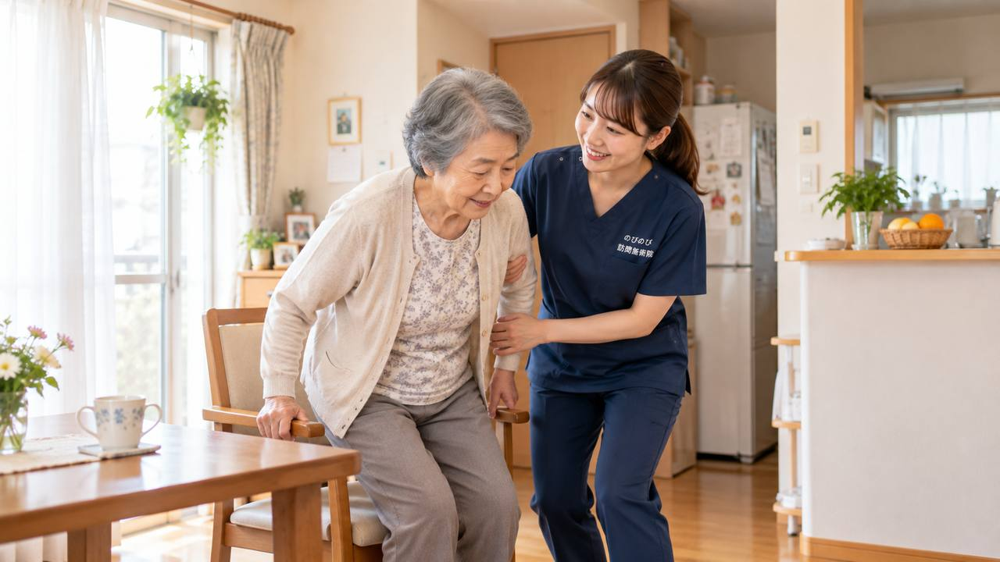

転んで足の付け根（大腿骨）を骨折し、手術やリハビリを経て自宅に戻った。この時期のすごし方が、その後また歩けるようになるかの分かれ目になります。骨折後の治療とリハビリの中心は、整形外科やリハビリ職が担います。それに伴って固くなる筋肉のこわばりを和らげ、動かしやすさを保つ部分は、ご自宅にうかがう鍼灸・マッサージでお手伝いできます。
この記事のポイント
骨折後の治療とリハビリの中心は、整形外科やリハビリ職が担います。それに伴って固くなる筋肉のこわばりを和らげ、動かしやすさを保つことは、訪問鍼灸マッサージがお手伝いできます。医師が施術を必要と認め、通院がむずかしい状態なら、はり・きゅうの医療保険の対象になる場合があります。強い痛みが急に出た、患部が腫れて熱をもつ、発熱があるといったときは、まず主治医にご連絡ください。
骨折のあとが、その後の暮らしの分かれ目
高齢の方が足の付け根（大腿骨）を骨折すると、多くは手術とリハビリを経て回復を目指します。この時期のすごし方が、その後また歩けるようになるか、動けない生活に近づくかの分かれ目になります。痛みや不安から動かさずにいると、脚の力が落ち、関節も固まって、回復が遠のいてしまいます。負担にならない範囲で、少しずつ体を動かし続けることが、何より大切です。
治療とリハビリが、回復の土台
骨折後の回復の中心は、整形外科の主治医による経過の管理と、理学療法士などによるリハビリテーションです。どの動きをどれくらい行ってよいか、体重をかけてよいかは、専門職の判断が土台になります。訪問鍼灸マッサージは、これに代わるものではなく、並行して、こわばった筋肉を和らげ、動かしやすい状態を保つことでリハビリを下支えする役割です。こわばりの取れ方や動かしやすさの変化には個人差があります。まずは主治医とリハビリの方針を大切にしてください。
こんなときは、先に主治医へ
手術した側の足に急に強い痛みが出た、患部が赤く腫れて熱をもつ、足が動かせない・力が入らない、発熱をともなう、ふくらはぎが片方だけ腫れて痛む。このようなときは、術後の合併症や、血のかたまりなどが疑われ、まず主治医にご連絡ください。鍼灸は、こうした急を要する状態がないことを確かめ、体調に合わせて、無理なく行います。
鍼灸・手技でできること
骨そのものの回復は体と時間が担いますが、動かさない時期が続くと、太ももやお尻、ふくらはぎの筋肉が固くなり、関節も動きにくくなります。はりやお灸、手技では、こうしたこわばりを和らげ、めぐりをうながすケアを行います。関節が固まりきる前に動かせる範囲を保っておくことは、リハビリの進みやすさにも関わります。鍼灸に加えて、主治医の許す範囲での機能訓練も行い、少しずつ動かす習慣づくりを段取りします。折れた場所が手首の場合は、指や前腕のこわばりが残りやすく、進め方が少し変わります。そちらは「手首の骨折あとのこわばり・動かしにくさ｜在宅でできるケア」で詳しくご紹介しています。
転倒を防ぎながら、動きを戻す
一度骨折を経験すると、また転ぶのがこわいという不安から、動くのをためらいがちになります。その気持ちは自然なものですが、動かないと力はさらに落ちます。大切なのは、転ばないよう気をつけながら、動ける範囲で動きを戻していくことです。家の中でつかまれる場所を決める、あわてて動かない、といった工夫もお伝えします。脚の力を保つことは、次の転倒を防ぐことにもつながります。
退院直後の一、二か月が、とくに大切
大腿骨の骨折後は、退院してご自宅に戻った直後の一、二か月が、その後をおおきく左右します。この時期は、痛みや不安から動きが減りやすく、少し気を抜くと脚の力が落ちてしまいます。かといって無理をすると、痛みやこわばりが強まります。ですから、主治医やリハビリの方針にそって、できる範囲で毎日少しずつ動かし続けることが肝心です。この時期にこわばりを和らげ、動かせる範囲を保っておくことは、回復のしやすさに関わってきます。
焦らず、その方のペースで
回復の速さは人それぞれで、比べる必要はありません。痛みや疲れの出る日は無理をせず、調子のよい日は少し動かす、と加減しながら続けることが、遠回りのようで着実です。ご本人がまたこれができたと感じられる小さな一歩を、一緒に積み重ねていきます。ご家族には、手伝いすぎず見守る場面と、支える場面の見きわめをお伝えし、無理のない在宅の回復を支えます。
ご家族の見守りと、手助けの加減
回復期は、ご家族の関わり方も大切になります。転ばないか心配で何でも手伝ってしまうと、かえってご本人の力が戻りにくくなることがあります。かといって、無理をさせては危険です。どこを手伝い、どこを見守るか。その加減が、回復のカギになります。うかがったときに、その方の今の力に合わせて、安全に自分でできること、手を添えたほうがよいことをお伝えし、ご家族の不安も一緒に受けとめながら進めます。
保険と自己負担のこと
骨折後の慢性的な痛みやこわばりについて、医師が鍼やお灸を必要と認め、通院がむずかしい状態であれば、はり・きゅうの医療保険が使える場合があります。1回の総額は3,950円で、自己負担は負担割合に応じた分だけです。1割の方でおよそ395円が目安です。退院後、リハビリと並行して受ける方が多く、続けやすい料金です。対応エリア内であれば出張費は別にかからず、集金は月ごとにまとめて行い、その月の施術の内訳がわかる明細をお渡しします。
お申し込みからの流れ
はじめに、お電話などで、骨折の経過やリハビリの状況、いま困っている動作、主治医のことをお聞かせください。医療の方針を土台に、鍼灸でできることをご説明します。ケアマネジャーやリハビリの方がいる場合は連携しながら進めます。まずはお気軽にお問い合わせください。最初の一歩から順に知りたい方は「利用までの流れ」をご覧ください。
よくある質問
骨折後でも受けられますか？
手術やリハビリと並行して、こわばりを和らげるケアが受けられます。動かしてよい範囲は主治医の判断が土台なので、方針をうかがって進めます。
リハビリと一緒に頼めますか？
はい。役割が違うため併用できます。同じ部位で医療保険のリハビリと重なる場合は決まりがあるので、状況をうかがってご案内します。
また転ぶのがこわいのですが
その不安は自然なものです。転ばないための工夫をお伝えしつつ、脚の力を保つことで、動く自信を少しずつ取り戻すお手伝いをします。
寝たきりに近い状態でも受けられますか？
はい。ベッドの上で、関節を動かして固まりを防ぎ、めぐりをうながすケアができます。刺激も体調に合わせて調整します。
費用は1回いくらですか？
1回の総額は3,950円で、自己負担は負担割合に応じた分だけです。1割の方でおよそ395円が目安になります。対応エリア内であれば出張費は別にかかりません。
どのあたりまで来てもらえますか？
豊中・吹田・茨木・箕面・摂津・池田、尼崎・伊丹、大阪市の淀川区・東淀川区・都島区・北区・旭区にうかがっています。